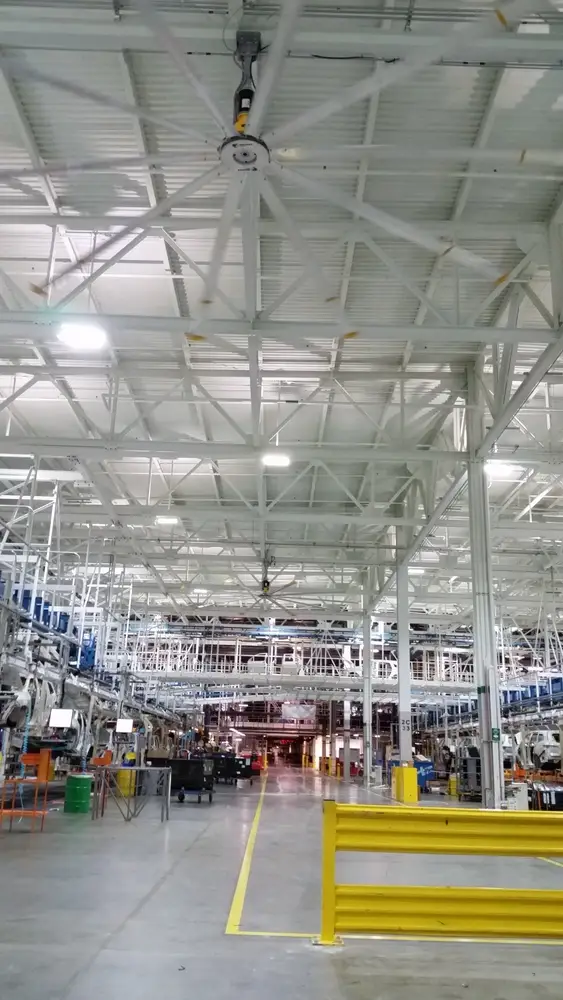
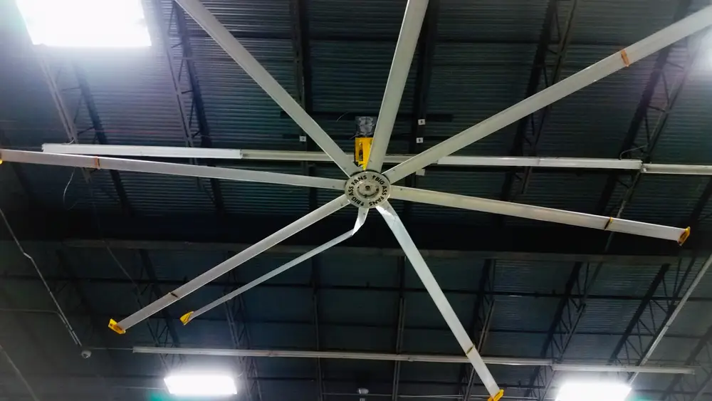
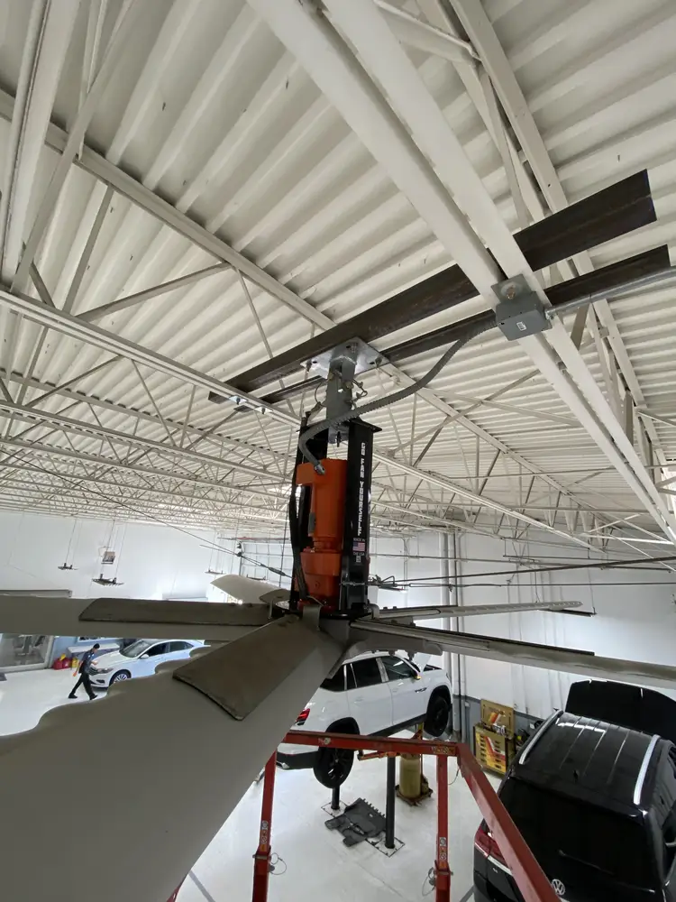
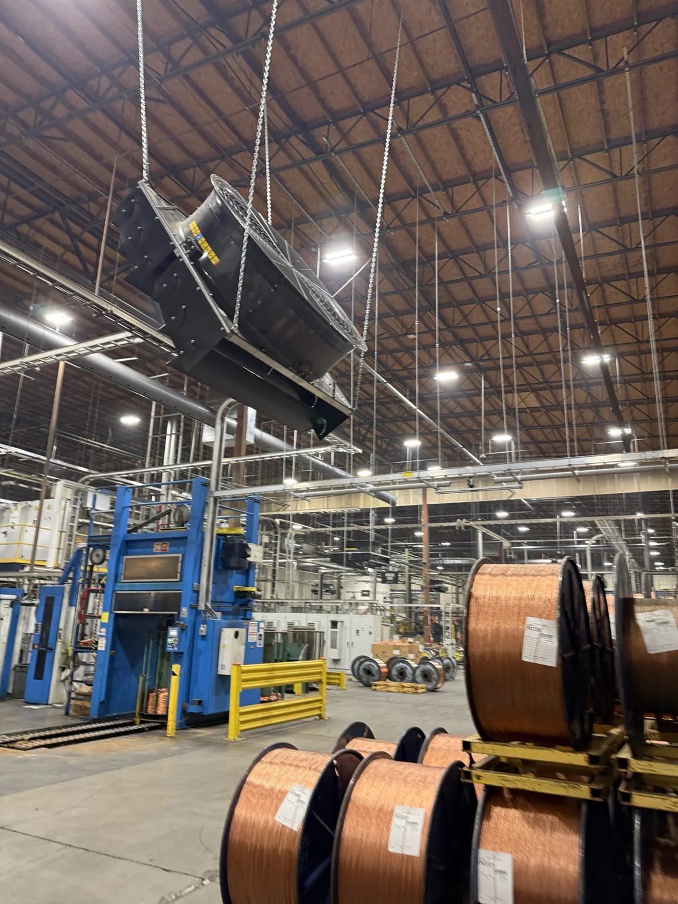
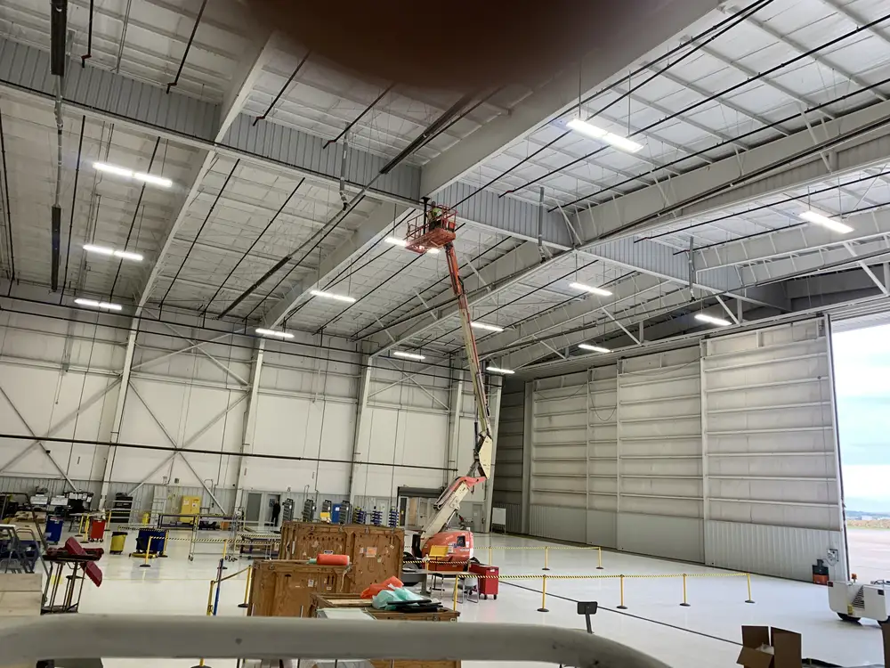
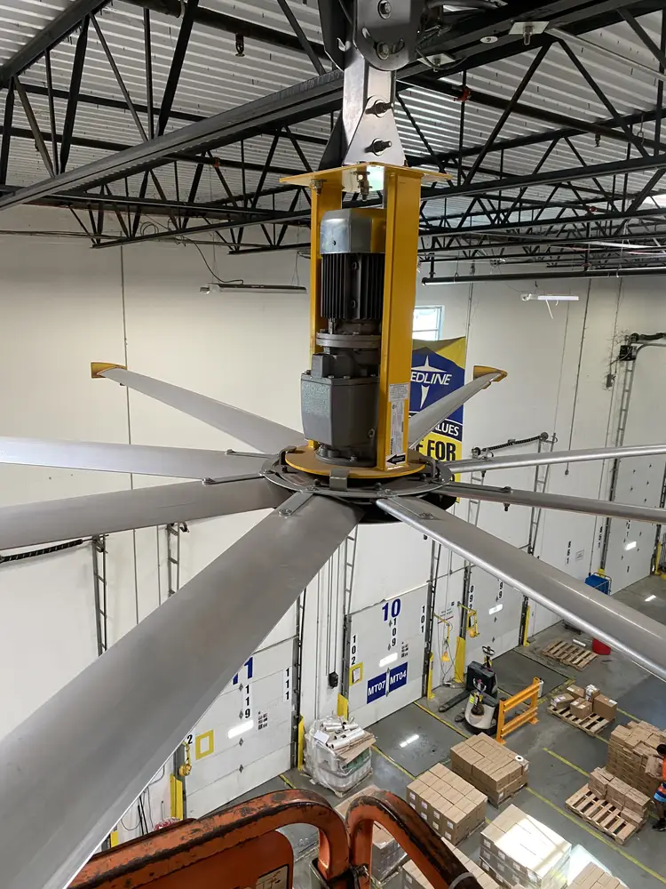

Research & Engineering
HVLS Air Movement vs. Ventilation
Understand how HVLS air movement differs from outdoor-air ventilation, with practical questions for facility specifications and project reviews.
3 min readUnderstand how HVLS air movement differs from outdoor-air ventilation, with practical questions for facility specifications and project reviews.
3 min read
Read the factory-fan study announcement alongside worker heat guidance, separating reported comfort, physiological measurements and manufacturer claims.
2 min readUnderstand how HVLS air movement differs from outdoor-air ventilation, with practical questions for facility specifications and project reviews.
3 min read
Review ABB enclosure and drive-configuration claims, environmental limits and the OEM compatibility questions to settle before quoting an HVLS retrofit.
3 min read
Compare CFEI and CFM per watt, identify the operating points behind fan ratings, and separate laboratory efficiency evidence from installed performance.
4 min read
Examine Greenheck DS fan documentation, shipping-date manual differences and controls questions that affect installation planning and submittal review.
4 min readReview Powerfoil 6 installation planning through its manufacturer manual: electrical variant, structural attachment, controls and shutdown coordination.
3 min read
Plan HVLS installation access around lift capacity, work position, travel routes and site hazards before committing equipment and labor to the job.
3 min read
Identify VividAir and legacy Go Fan Yourself product generations, controls and documentation before assuming a fan, drive or keypad is interchangeable.
3 min read
Review VividAir TAZ aisle-fan placement, manufacturer performance claims and the guide-label inconsistency to resolve against the installed equipment.
3 min readRead the factory-fan study announcement alongside worker heat guidance, separating reported comfort, physiological measurements and manufacturer claims.
2 min read
Explore Berkeley research on ceiling-fan-integrated air conditioning and the coordination questions it raises for mechanical designers and installers.
2 min readFind the OSHA distinction between scissor lifts and aerial lifts, then organize the access-planning questions for an HVLS installation crew.
2 min read
Read the federal fan-blade guarding provision in context and identify the placement information that belongs in a facility fan review.
2 min read